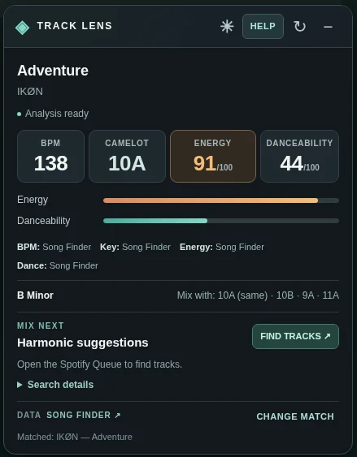

Analysis alongside your music
See BPM, Camelot key, energy and danceability without switching to a separate analysis website.
Track Lens puts the numbers you care about right alongside the music. Analyse songs, check their energy, and discover tracks that mix harmonically on Spotify and YouTube Music.
Free beta · Chrome and Vivaldi desktop · Manual installation · No account needed

Designed for the moments when a track catches your ear and you want to know where it could take the set next.
See BPM, Camelot key, energy and danceability without switching to a separate analysis website.
Scan Spotify Radio or Queue, or YouTube Music Up Next, for harmonically compatible tracks. Related songs in other keys are clearly labelled.
Move the panel on desktop, drag the mobile mini strip, and choose your light or dark theme.
Keep an eye on the energy of a track or potential transition, with source attribution for each metric.
Review the correct Original, Extended or Remix recording when catalogue matches are ambiguous.
Previous analyses and manually entered values are saved in your browser profile, with backup and restore controls.
The beta is installed as an unpacked extension. The process is straightforward, although updates are manual until Track Lens has a store listing.
track-lens folder in a permanent location. Avoid moving or renaming it after installation.chrome://extensions · Vivaldi: vivaldi://extensions. Switch on Developer mode.track-lens folder (the one containing manifest.json). Open Spotify Web Player or YouTube Music and play a song.Verified compatible keys and other related tracks are shown in separate sections, so you always know which mixes are actually compatible on the Camelot wheel.
Scan newly loaded tracks, retry failed lookups separately and dismiss incorrect recording suggestions. Light/dark themes and draggable panels are still included.
Manually installed betas need manual updates: replace the files in the same installation folder, then reload the extension. Read the update guide.